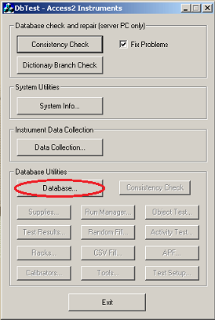
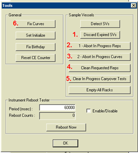
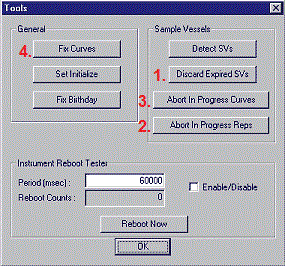

This procedure describes how to clear incomplete in-progress samples from the user interface.
Perform this procedure when:
The UI has an in-progress sample remaining in the display when no sample is physically present.
The UI has a problem scheduling a new calibration due to an in-progress calibration.
Create the local copy of the database.
Note: Poet Object Server (DxI Software 5.2 and below or Access2 Software 3.4.2 and below ) and Fast Objects Server (DxI Software 5.3.1 and above or Access2 Software 3.4.3 and above) are the same objects server running the database. Fast Objects Server replaces Poet Object Server on the latest DxI and Access2 system software.
For Windows XP console PC with DxI Software 5.2 and below or Access2 Software 3.4.2 and below:
From the
Main Menu in the user interface, select
[Alt] + [F4]
Enter the password
Access2Support observing upper and lower case. The PC will exit to the Windows desktop.
Select the poet server icon near the clock at the bottom right corner of the display.
Select the
X at the upper right corner of the poet server window and
OK to the shutdown server pop-up.
Select
Start> Programs> Windows Explorer to open Windows Explorer.
Navigate to the
C:\NexGen\Console folder (for DxI) or
C:\NexStep\PC folder (for Access 2).
Right-click on the
DRW folder and select
Copy.
If errors occur during the copy, then:
Use the Task Manager to end any applications which may prevent copying the database.
A software error may have locked the database. Select the Poet Object Server icon at the bottom right corner of the display near the system clock. Shut down the server and close any error messages. Restart the server by selecting
Start > Run, typing
ptserv32.exe on the text line, and selecting
OK.
Right-click on the
Console (DxI) or
PC (Access2) folder, and select
Paste to make a Copy of the DRW folder.
Close Windows Explorer when finished making the copy.
For Windows 8 Mini PC with DxI Software 5.3.1 and above or Access2 Software 3.4.3 and above:
Note: DxI Software 5.3.1 and Access2 Software 3.4.3 are compatible with Windows XP console PC. If either software was installed on the Windows XP console PC, then follow the Windows XP section to make a copy of the database.
From the Main Menu, press
[Alt] + [F4] and then enter
Access2Support to exit the user interface.
Shut down the Fast Objects Server.
Press
Ctrl + Alt + Delete and select
Task Manager or right click on the task bar and select
Task Manager.
In the
Task Manager box, click on
Processes, select
FastObjects Server and click on
End Task in the bottom corner of the box.
Press
Windows key and select
File Explorer icon or type
file explorer and open the program.
Navigate to the
C:\NexGen\Console folder (for DxI) or
C:\NexStep\PC folder (for Access 2).
Right-click on the
DRW folder and select
Copy.
If errors occur during the copy, then:
Use the Task Manager to end any applications which may prevent copying the database.
A software error may have locked the database. Shut down the Fast Objects Server and close any error messages. Restart the server by pressing
Windows key and select the
Fast Objects Server icon or type
run, open the Run program, typing
ptserv32.exe on the text line, and selecting
OK.
Right-click on the
Console (DxI) or
PC (Access2) folder, and select
Paste to make a
Copy of the DRW folder.
Close File Explorer when finished making the copy.
Launch the user interface, and verify that the
Ready status is displayed.
Warning: Before using the Database Utility, confirm that the instrument is not in the
Running or
Paused mode.
Open the Database Utilities function.
For Windows XP console PC with DxI Software 5.2 and below or Access2 Software 3.4.2 and below:
On the console PC, select
Start > Programs > NexGen or NexStep > DbTest.
In the
DbTest
window, select
Database.
Figure 128: DxI DbTest
Figure 129: Access2 DbTest

If the
Database icon is not active, then use these steps to enable the
DevDbTest option in the registry:
Exit
DbTest.
Select
Start
> Run, and then type in
Regedit.
Navigate to
HKEY_LOCAL_MACHINE\SOFTWARE\BECKMAN\NexStep.
Right-click on
DevDbTest, select
Edit, and then change the number 0 to 1.
Open the
DbTest application.
Select
OK to the
Open Poet Database pop-up.
For Windows 8 Min PC with DxI Software 5.3.1 and above or Access2 Software 3.4.3 and above :
Note: DxI Software 5.3.1 and Access2 Software 3.4.3 are compatible with Windows XP console PC. If either software was installed on the Windows XP console PC, then follow the Windows XP section to launch DbTest application and enable the Database tools.
Press
Windows key, select DbTest UD icon or type
DbTest
and open the program.
In the
DbTest
window, select
Database.
Figure 130: DxI DbTest
Figure 131: Access2 DbTest
If the
Database icon is not active, then use these steps to enable the
DevDbTest option in the registry:
Exit
DbTest.
Press
Windows
key, type
regedit, and open the Regedit program.
Navigate to
HKEY_LOCAL_MACHINE\SOFTWARE\BECKMAN\NexStep.
Right-click on
DevDbTest, select
Edit, and then change the number 0 to
1.
Open the
DbTest UD program.
Select
OK to the
Open Poet Database pop-up.
Clear in-progress samples using the DbTest application.
Select
Tools from the bottom of the
DbTest window.
Warning: Use of any feature other than Tools can damage the database.
Verify that the user interface is visible in the background, and then:
For DxI Software:
Select
Discard Expired SVs.
Select
Abort In Progress Reps > Yes > OK.
Select
Abort In Progress Curves > OK.
Select
Clean requested Reps > Yes.
Select
Clear In Progress Carryover Tests > Yes > OK.
Select
Fix Curves > OK.
Figure 132: DxI Software 5.1 and above

Note:
The
Detect SVs button displays the number of sample vessels detected in the instrument.
For the Tools program to communicate with the instrument, the user interface must be running in the background.
Repeatedly selecting action buttons while waiting for tasks to complete can cause the console PC to lock-up.
For Access2 Software:
Select
Discard Expired SVs.
Select
Abort In Progress Reps > Yes > OK.
Select
Abort In Progress Curves > OK.
Select
Fix Curves > OK.
Figure 133: Access2 Software 3.4.2 and above

Note:
The
Detect SVs button displays the number of sample vessels detected in the instrument.
For the Tools program to communicate with the instrument, the user interface must be running in the background.
Repeatedly selecting action buttons while waiting for tasks to complete can cause the console PC to lock-up.
Select
OK > Exit to exit
Tools and the DbTest program.
Re-launch the user interface.
For Windows XP console PC with DxI Software 5.2. and below and Access2 Software 3.4.2 and below:
Select
Start > Programs > NexGen or Access2 > NexGenUI UD or Access2 to launch the user interface.
For Windows 8 Mini PC with DxI Software 5.3.1 and above and Access2 Software 3.4.3 and above:
Note: DxI Software 5.3.1 and Access2 3.4.3 are compatible with Windows XP console PC, if either software was installed on the Windows XP console PC, then follow the Windows XP section to launch the user interface.
Double click on the
NexGen Application or Access2 Application shortcut on desktop, or press
Windows key and select
NexGenUI UD or NexStepUI UD icon, or type
nexgenui or nexstepui and open the program.
If in-progress samples remain after using DbTest, then use the Poet or Fast database application to clear in-progress samples.
For Windows XP console PC with DxI Software 5.2 and below or Access2 Software 3.4.2 and below:
From the
Windows Desktop on the console PC, select
Start > Programs > NexGen (or Access2) > Poet Developer or Poet Administrator.
In Poet browser, select
File > Open Database.
In the Host field, enter
LOCALHOST. In the Database field, enter
NexStepBase. Select
OK.
Note: NexStepBase is case-sensitive.
Select
Objects > Browse Extent.
For Windows 8 Mini PC with DxI Software 5.3.1 and above or Access2 Software 3.4.3 and above:
Note: DxI Software 5.3.1 and Access2 Software 3.4.3 are compatible with Windows XP console PC. If either software was installed on the Windows XP console PC, then follow the Windows XP section to launch Fast database application. Poet database application is replaced by Fast database application.
Press
Windows key, select
Fast Developer or
Fast Administrator icon or type
developer or
administrator and open the program.
In Fast browser, select
File > Open Database.
In the Host field, enter
LOCALHOST. In the Database field, enter
NexStepBase. Select
OK.
Note: NexStepBase is case-sensitive.
Select
Objects > Browse Objects.
Clear in-progress samples using Poet or Fast database application.
Execute a query.
In the
Extent Explorer window of the POET or Fast database, select
OQL > New Query from the top menu.
In the query window, type
SELECT* FROM BPtSampleTubeExtent WHERE m_eSampleTubeState < 5
Note: The query text is case-sensitive.
Select
OQL > Execute Query. A pop-up query window displays the search results.
Note: Each result in the pop-up query window represents a sample. Each sample must be opened and edited individually.
Edit the
TestResultState.
Double-click to open the first result in the query.
HIghlight the
m_eSampleTubeState entry on the right side of the screen.
Right-click and select
Edit. Change the number to
5.
Select
OK.
Highlight the top line (PTObjID) on the left side of the split screen, and then right-click and select
Store.
When all the results or samples have been edited, close the
PtObjID windows to return to the
Results of query 'Untitled' window.
Close the
Results of query 'Untitled' window.
Close the
Untitled window and select
No.
Select
File > Exit > Yes to exit the POET or Fast application.
When in-progress samples are cleared, perform a Database Consistency Check.


 Note: NexStepBase is case-sensitive.
Note: NexStepBase is case-sensitive.